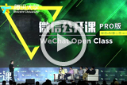

微信商学院
- 微信公开课
- 生活服务
- 腾讯课堂
- 服务机构
- 公共公众号
- 银行金融
- 更多行业
微信是实现了通讯、社交及平台化三者一体的平台级产品。对于政府、企业、媒体、公众机构而言，这是一个与用户直接对话、产生互动、甚至促成交易的平台。 那怎样才能借助微信与用户互动、运营好品牌呢？且看微信商学院用实战教学，如何用微信赢得市场。

【微信公开课Pro版】创新案例PK微信官方导师团评价：
创新案例分享：微微拼车、牛司机、中国扶贫基金会、微导诊
【微信公开课Pro版】创新案例PK微信官方导师团评价：
创新案例分享：微微拼车、牛司机、中国扶贫基金会、微导诊微拼车、牛司机、中国扶贫微拼车、牛司机、中国扶贫基金会基金会
【微信公开课Pro版】创新案例PK微信官方导师团评价：
创新案例分享：微微拼车、牛司机、中国扶贫基金会、微导诊微拼车、牛司机、中国扶贫微拼车、牛司机、中国扶贫基金会基金会
【微信公开课Pro版】创新案例PK微信官方导师团评价：
创新案例分享：微微拼车、牛司机、中国扶贫基金会、微导诊微拼车、牛司机、中国扶分，第一个是功能端的，总控、服务员、厨房。每个地方业务接点都进行了业务记录，什么时候出差、寄到服务响应都可以记录。再下面是CRM和财务，我们对顾客什么时候来，什么喜好，甚至于坐师张桌子部很清楚。贫微拼车、牛司机、中国扶贫基金会基金会
【微信公开课Pro版】创新案例PK微信官方导师团评价：
创新案例分享：微微拼车、牛司机、中国扶贫基金会、微导诊微拼车、牛司机、中国扶分，第一个是功能端的，总控、服务员、厨房。每个地方业务接点都进行了业务记录，什么时候出差、寄到服务响应都可以记录。再下面是CRM和财务，我们对顾客什么时候来，什么喜好，甚至于坐师张桌子部很清楚。贫微拼车、牛司机、中国扶贫基金会基金会